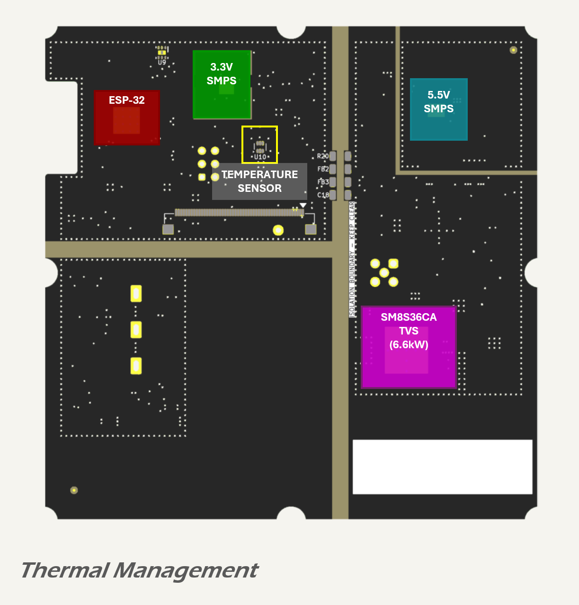

Thermal Management
Overview and Strategy
Thermal management in the MDD400 design follows a passive strategy supported by high-efficiency converters, thermal vias, and localised temperature monitoring. The goal is to maintain component junction temperatures within safe operating limits across the expected ambient temperature range.
Standards and Thermal Conditions
Analysis is based on the following assumptions:
- ambient air temperature up to 60 °C for typical operating conditions in enclosed marine installations;
- a design test ambient of 85 °C to represent worst-case thermal exposure in direct sunlight (per IEC 60068-2-2 and JESD51-2 environmental stress standards);
- temperature rise due to self-heating derived from individual power dissipation and copper connectivity;
- component thermal derating per JEDEC guidelines, notably JESD51-2 and JESD51-7;
- thermal performance referenced to 1 oz copper and 1.6 mm PCB thickness unless otherwise specified.
The 85 °C ambient test condition is used for thermal characterisation and certification, simulating surface heating of a black enclosure exposed to solar radiation. Temperature monitoring via the onboard sensor allows the firmware to implement protective thermal management strategies under such conditions.
PCB Construction and Heat Flow
The MDD400 uses a four-layer PCB as detailed in the stackup section, with:
- top and bottom signal layers containing copper pours for power distribution;
- dual internal ground planes (GNDREF and GNDC) providing low-impedance return paths and shielding;
- via stitching between surface copper and internal planes for both ground and power pours;
- ENIG surface finish on all copper features.
This construction supports distributed decoupling, reduced EMI, and effective thermal conductivity vertically through the board.
Heat Dissipation Strategy
All high-power devices are placed to maximise exposure to surrounding copper and minimise thermal coupling to temperature-sensitive components. Devices such as the ESP32 MCU, power converters, and transient protection components are mounted on copper regions stitched to the internal planes and to exposed copper regions on the bottom layer.
Via arrays are provided under or adjacent to:
- the 3.3 V and 5.5 V SMPS devices;
- the ESP32 processor;
- the SMBJ36CA TVS diode; and
- the power transformer in the isolated CAN supply.
These vias conduct heat from the component thermal pads to the bottom copper for convective dissipation and reduce hotspot formation.
Temperature Monitoring
An TMP112 digital temperature sensor is located on the top layer, near the ESP32 and 3.3 V SMPS, and thermally coupled to nearby copper. This sensor enables real-time monitoring of local board temperature and provides data for firmware-driven thermal throttling or alerting if required.

Analysis of Thermal Loads
5.5 V DC-DC Converter (TPS54560B-Q1)
The 5.54 V buck regulator based on the TPS54560B-Q1 supplies all downstream logic and interface subsystems. Under worst-case sustained 24 V NET-S input, thermal dissipation remains within safe margins due to low output current and effective copper spreading.
Key operating parameters:
- input voltage: 24 V (worst-case continuous);
- output voltage: 5.54 V;
- peak load: 330 mA;
- typical load: 215 mA;
- ambient: 60°C (typical) and 85°C (worst-case test);
- estimated efficiency: 88% at peak load, 91% at typical load.
Estimated power dissipation:
| Load Case | Output Power | Total Loss | IC Junction Temp (60°C ambient) |
|---|---|---|---|
| Peak (330 mA) | 1.83 W | 0.25 W | \~63 °C |
| Typical (215 mA) | 1.19 W | 0.12 W | \~62 °C |
The regulator IC's thermal pad is soldered to a top-layer copper pour with a via array to both internal ground planes and the bottom copper layer. Layout analysis confirms:
- compact switching loop and tight coupling between VIN, SW, inductor, and output capacitors;
- multiple thermal vias under the IC and inductor footprint;
- isolated GNDSMPS region minimizes noise coupling to digital domains;
- spread copper for inductor and diode power dissipation.
These measures ensure that both steady-state and transient thermal loads are safely distributed across the board, with no reliance on airflow or external heatsinking.
Even under sustained 24 V operation, no hotspot exceeds 70 °C at 60°C ambient. Margin to the 150 °C absolute maximum rating is >80 °C, validating that the over-voltage disconnection feature may be omitted without thermal risk in this design.
This converter stage exhibits negligible self-heating under normal operation and remains stable and safe across all expected environmental and input conditions.
ESP32-S3 MCU
The ESP32-S3 microcontroller (U1) is housed in a 56-pin QFN package with a central exposed thermal pad. This pad is soldered to a grounded copper area on the top layer, with an array of thermal vias connecting directly to the two internal ground planes and to the bottom copper pour. This multilayer structure supports vertical heat flow into the PCB stack and distributes heat across all four layers*.
Power dissipation* varies with operating mode:
| Mode | Core + Digital (mW) | Radio (mW) | Total Power (mW) |
|---|---|---|---|
| Typical (idle) | ~80 | 0 | ~80 |
| Peak (TX active) | ~120 | ~320 | ~440 |
*From ESP32-S3 datasheet at 3.3 V supply and ambient 25 °C.
The ESP32-S3 QFN package exhibits the following thermal characteristics:
- junction-to-case thermal resistance (θ JC): ~10 °C/W (typical);
- junction-to-board thermal resistance (θ JB): ~20 °C/W (conservative, via-stitched pad to multilayer ground);
- effective thermal resistance to ambient through PCB (estimated): θ JA = 30 °C/W under natural convection.
Estimated junction temperatures* for typical and peak power at 60 °C and 85 °C ambient:
| Ambient (°C) | Typical (80 mW) | Peak (440 mW) |
|---|---|---|
| 60 | 62.4 °C | 73.2 °C |
| 85 | 87.4 °C | 98.2 °C |
*Calculated using Tₑ = Tₘ + (θ JA × P), with θ JA = 30 °C/W.
The peak junction temperature of 98.2 °C is within the ESP32-S3 operating maximum (105 °C), leaving an estimated margin of 6.8 °C. In practice, the device rarely operates at continuous maximum RF output.
The thermal strategy—anchoring the exposed pad to a low-impedance, via-stitched ground region across multiple layers—provides adequate dissipation even under extended peak load in a 60–85 °C ambient range.
PCB images confirm full copper pad coverage, dense via stitching, and good isolation from adjacent hot zones.
SM8S36CA TVS Diode
The SM8S36CA is a 6.6 kW bidirectional transient voltage suppressor diode located at the NET-S connector, designed to absorb surge energy from high-voltage automotive transients, including ISO 7637-2 Pulse 5b load dumps. It begins clamping at approximately 58 V and is soldered to a dense copper area with direct via connections to the ground plane beneath.
Thermal performance during surge events is critical due to short-duration high-energy dissipation. The device's thermal response to a worst-case 150 V load dump (ISO 7637-2 Pulse 5b) is estimated below.
Assumptions:
- pulse width: 400 ms
- peak clamping voltage: 58 V
- absorbed energy: up to 320 mJ (10/1000 µs rating scaled by pulse duration)
- junction-to-case thermal resistance (θ JC): 1.7 °C/W (datasheet)
- junction-to-ambient estimated (PCB mounted with via array): θ JA ≈ 25 °C/W
| Ambient (°C) | Energy Dissipated (mJ) | ΔT = (E / t) × θ JA | Estimated Tₑ (°C)* |
|---|---|---|---|
| 60 | 320 | 0.32 J × 25 = 8.0 | 68.0 |
| 85 | 320 | 0.32 J × 25 = 8.0 | 93.0 |
*Conservative estimate based on full energy absorption in a single load dump event with no airflow. Actual peak temperature rise is likely lower due to copper spreading and brief duration.
The PCB layout supports this thermal performance with:
- large cathode/anode pad area with symmetric soldering;
- 16 thermal vias beneath the part connecting to a full ground pour on internal and bottom layers;
- minimal thermal resistance between diode and copper mass.
The TVS is positioned at the board edge, well isolated from temperature-sensitive components and mechanically reinforced by its footprint geometry.
This thermal strategy ensures that the TVS operates well below its maximum junction temperature (150 °C) even during extreme surge conditions.